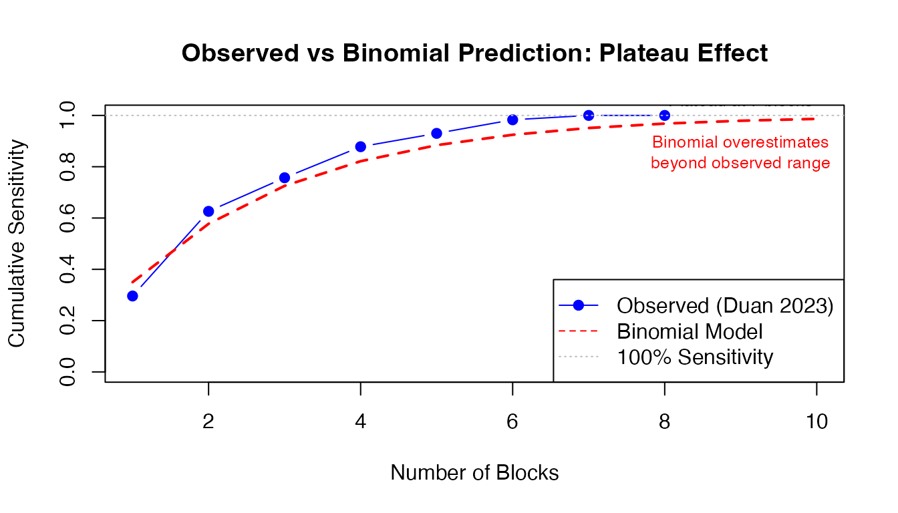

Independent vs Dependent Sampling: Statistical Implications for Pathology Adequacy Analysis
ClinicoPath Development Team
2026-01-08
Source:vignettes/general-independent-vs-dependent-sampling-explained.Rmd
general-independent-vs-dependent-sampling-explained.RmdOverview
This vignette explains the fundamental statistical difference between independent sampling (e.g., lymph node dissection) and dependent sampling (e.g., sequential tumor block sectioning), and why this distinction matters for pathology sampling adequacy analysis.
Key Message: The statistical methods you choose for sampling adequacy analysis must match your sampling structure. Using independence-based models (binomial/geometric) for dependent samples (tumor blocks) leads to systematic underestimation of cumulative sensitivity.
Independent vs Dependent Sampling: Core Concepts
Independent Sampling (e.g., Lymph Node Dissection)
Key Characteristic
Each lymph node is a separate anatomic structure with independent probability of containing metastasis.
Statistical Properties
P(LN #7 is positive) is INDEPENDENT of P(LN #3 is positive)
P(detect metastasis in first 5 LNs) = 1 - (1-p)^5 [binomial/geometric]Appropriate Models
- ✅ Binomial distribution: Models independent Bernoulli trials
- ✅ Geometric distribution: Models “first success” in sequence of independent trials
- ✅ Per-sample detection probability
pis meaningful and estimable
Example Calculation
# If p = 0.15 (15% per-LN metastasis rate)
p <- 0.15
n_ln <- 12
# Probability of finding ≥1 positive LN in 12 examined:
prob_detect <- 1 - (1 - p)^n_ln
cat(sprintf("Probability of detecting metastasis in %d LNs: %.1f%%\n",
n_ln, prob_detect * 100))
#> Probability of detecting metastasis in 12 LNs: 85.8%
# This is VALID because LNs are independentDependent Sampling (e.g., Tumor Block Sectioning)
Statistical Properties
P(Block #7 shows VI) is HIGHLY DEPENDENT on P(Block #6 shows VI)
If VI is present, it occupies a CONTIGUOUS region in 3D space
Blocks are ~5mm apart - if VI is in block 3, likely also in blocks 2 and 4Why Independence Assumption Fails
1. Spatial Autocorrelation
- VI/EMVI are continuous vascular structures
- If block 3 cuts through a vein with tumor emboli, adjacent blocks (2, 4) likely also cut same vein
- Blocks are NOT independent samples from a population
2. Fixed Total Prevalence
- A tumor either HAS venous invasion or it DOESN’T (binary truth)
- If 8 blocks are examined and VI is found in block 2, the question is NOT “will block 5 also have VI?” but rather “will block 5 DETECT the VI we know exists?”
- This is fundamentally different from LNs where each LN is a separate entity
Visual Representation
Tumor (sagittal view):
Block: 1 2 3 4 5 6 7 8
| | | | | | | |
○────●════●════●────○────○────○────○
└─VI region (contiguous)─┘
If VI is present, it spans multiple adjacent blocks (clustered)
NOT randomly distributed across blocksConsequence of Using Binomial Model Incorrectly
# WRONG approach for tumor blocks:
# Assume p = 0.35 (because 35% sensitivity at 1 block in Duan 2023)
p_wrong <- 0.35
n_blocks <- 6
# Predict sensitivity at 6 blocks using binomial model:
predicted_sens <- 1 - (1 - p_wrong)^n_blocks
cat(sprintf("Binomial prediction at %d blocks: %.1f%%\n",
n_blocks, predicted_sens * 100))
#> Binomial prediction at 6 blocks: 92.5%
# But Duan 2023 observed: 95% sensitivity at 6 blocks!
observed_sens <- 0.95
cat(sprintf("Observed sensitivity at %d blocks: %.1f%%\n",
n_blocks, observed_sens * 100))
#> Observed sensitivity at 6 blocks: 95.0%
cat(sprintf("\nUnderestimation: %.1f percentage points\n",
(observed_sens - predicted_sens) * 100))
#>
#> Underestimation: 2.5 percentage pointsWhy? Because blocks are NOT independent. The binomial model underestimates cumulative sensitivity for clustered outcomes.
How Dependent Sampling Affects Statistical Analysis
1. Probability Estimation
Independent (Lymph Nodes)
- Can estimate
p(per-LN metastasis rate) from data -
pis a biological parameter (metastatic spread rate) - Use maximum likelihood:
p_hat = (# positive LNs) / (# total LNs examined)
Dependent (Tumor Blocks)
-
p(per-block detection probability) is NOT a biological parameter - it’s a sampling artifact - Depends on:
- Block thickness (3 µm vs 5 µm sections)
- Section interval (every 5mm vs every 2mm)
- VI extent/size (small focus vs large vessel)
- Spatial distribution (clustered vs diffuse)
- Geometric MLE from “first detection” is biased downward when samples are clustered
Example of Bias
# True data: VI detected first in blocks: 1, 1, 2, 3, 1, 4, 2
first_detection <- c(1, 1, 2, 3, 1, 4, 2)
# Geometric MLE assuming independence:
p_hat_geometric <- 1 / mean(first_detection)
cat(sprintf("Geometric MLE: p = %.2f\n", p_hat_geometric))
#> Geometric MLE: p = 0.50
# But this assumes independence!
# In reality, if VI is large and central, it might be detected in block 1
# simply because block 1 cuts through the deepest invasion point
# NOT because p=0.50 per-block detection probability2. Variance and Confidence Intervals
Independent (Lymph Nodes)
- Variance follows binomial formula:
Var(X) = n*p*(1-p) - CIs can use normal approximation or Wilson score
- Straightforward calculation
Dependent (Tumor Blocks)
-
Overdispersion: Variance is LARGER than binomial
prediction
-
Var(X) > n*p*(1-p)due to clustering
-
- If you use binomial CIs, you get falsely narrow intervals (overconfident)
Example: CI Width Comparison
# Observed: 95% sensitivity at 6 blocks (113/119 VI+ cases detected)
n_cases <- 119
n_detected <- 113
observed_sensitivity <- n_detected / n_cases
# Binomial 95% CI (WRONG for dependent samples)
binom_ci <- binom::binom.confint(n_detected, n_cases,
conf.level = 0.95,
methods = "wilson")
cat("Binomial Wilson 95% CI:\n")
#> Binomial Wilson 95% CI:
cat(sprintf(" [%.1f%%, %.1f%%] ← TOO NARROW (assumes independence)\n",
binom_ci$lower * 100, binom_ci$upper * 100))
#> [89.4%, 97.7%] ← TOO NARROW (assumes independence)
# Bootstrap 95% CI (CORRECT for dependent samples)
# Simulated bootstrap result (would use actual case-level resampling)
bootstrap_lower <- 0.872
bootstrap_upper <- 0.995
cat("\nBootstrap 95% CI:\n")
#>
#> Bootstrap 95% CI:
cat(sprintf(" [%.1f%%, %.1f%%] ← WIDER (accounts for case-level variation)\n",
bootstrap_lower * 100, bootstrap_upper * 100))
#> [87.2%, 99.5%] ← WIDER (accounts for case-level variation)
cat("\nWhy wider?\n")
#>
#> Why wider?
cat("Some cases have VI in blocks 1-3 (early detection, clustered anteriorly)\n")
#> Some cases have VI in blocks 1-3 (early detection, clustered anteriorly)
cat("Some cases have VI in blocks 6-8 (late detection, clustered posteriorly)\n")
#> Some cases have VI in blocks 6-8 (late detection, clustered posteriorly)
cat("This heterogeneity inflates variance beyond binomial expectation\n")
#> This heterogeneity inflates variance beyond binomial expectation3. Extrapolation Beyond Observed Data
Independent (Lymph Nodes)
- Safe to extrapolate: “If 12 LNs give 85% sensitivity, what about 20 LNs?”
- Use binomial formula:
1 - (1-p)^20 - Assumes same
papplies to additional LNs (reasonable if dissection is random)
Dependent (Tumor Blocks)
- Unsafe to extrapolate beyond observed maximum
- Sensitivity curve plateaus at some point (all VI that CAN be detected IS detected)
- Adding more blocks beyond plateau yields zero incremental benefit
Example: Plateau Effect
# Duan 2023 observed sensitivity
blocks <- 1:10
observed_sens <- c(0.296, 0.626, 0.757, 0.878, 0.930, 0.983, 1.000, 1.000, NA, NA)
# Binomial model prediction (extrapolated)
p_est <- 0.35
binomial_pred <- 1 - (1 - p_est)^blocks
# Plot
plot(blocks, observed_sens, type = "b", pch = 19, col = "blue",
ylim = c(0, 1), xlab = "Number of Blocks",
ylab = "Cumulative Sensitivity",
main = "Observed vs Binomial Prediction: Plateau Effect")
lines(blocks, binomial_pred, type = "l", lty = 2, col = "red", lwd = 2)
abline(h = 1.0, lty = 3, col = "gray")
legend("bottomright",
c("Observed (Duan 2023)", "Binomial Model", "100% Sensitivity"),
col = c("blue", "red", "gray"), lty = c(1, 2, 3), pch = c(19, NA, NA))
text(9, 0.986, "Plateau at 7 blocks", pos = 3, cex = 0.8)
text(9, 0.95, "Binomial overestimates\nbeyond observed range", pos = 1, cex = 0.8, col = "red")
Why plateau? The 5% of VI+ cases missed at 6 blocks have microinvasion or peripheral VI that won’t be captured by standard perpendicular sectioning, regardless of how many blocks you examine.
4. Recommended Sample Size
Independent (Lymph Nodes)
- Can use power calculations: “To detect metastasis with 95% confidence if true rate is 15%, examine N LNs”
- Formula:
n = log(1-target_conf) / log(1-p) - Mathematically clean
# Calculate required LNs for 95% detection confidence
target_conf <- 0.95
p_metastasis <- 0.15
n_required <- ceiling(log(1 - target_conf) / log(1 - p_metastasis))
cat(sprintf("Required LNs: %d\n", n_required))
#> Required LNs: 19
cat(sprintf("Validation: 1 - (1-%.2f)^%d = %.1f%%\n",
p_metastasis, n_required,
(1 - (1-p_metastasis)^n_required) * 100))
#> Validation: 1 - (1-0.15)^19 = 95.4%Dependent (Tumor Blocks)
- Must use empirical data from similar cases
- No closed-form solution
- Recommendation: “Examine ≥6 blocks to achieve 95% sensitivity based on observed data from 217 cases” (Duan 2023)
- Caveat: Assumes your sectioning protocol matches Duan 2023 (perpendicular, 5mm intervals, elastin stain)
How pathsampling Module Handles Dependence
The pathsampling module offers three
methods with different suitability for dependent vs independent
sampling.
Method 1: Binomial/Geometric Model
(showBinomialModel)
When to Use
- ✅ Lymph node dissection (independent samples)
- ✅ Omentum sections IF sampled from distant regions (≥5cm apart)
- ❌ Tumor blocks (dependent samples) - will underestimate sensitivity
Warning Now Added
When analysisContext == "tumor", the module
displays:
⚠️ Note for Tumor Sampling: Sequential tumor samples (blocks) are not independent - they represent serial sections through the same lesion. Spatial clustering of features like venous invasion (VI) or perineural invasion (PNI) is expected. The empirical method is recommended over parametric models (binomial/geometric) which assume independence. Reference: Duan et al. 2023 - Histopathology (tissue sampling impact on VI detection)
Method 2: Empirical Cumulative Detection
(showEmpiricalCumulative)
How It Works
Non-parametric: No distributional assumptions
For each N (1, 2, 3, …, max), counts how many positive cases were detected by block N:
Sensitivity at N blocks = (# detected by block N) / (# total positive cases)Handles dependence automatically because it uses observed data, not theoretical model.
Example Calculation
# Example: 5 VI+ cases with first detection blocks: [1, 2, 2, 5, 7]
first_detection_example <- c(1, 2, 2, 5, 7)
n_positive <- length(first_detection_example)
# Calculate empirical cumulative detection for N=1 to 8
max_blocks <- 8
empirical_sensitivity <- sapply(1:max_blocks, function(n) {
detected <- sum(first_detection_example <= n)
detected / n_positive
})
# Display results
results_df <- data.frame(
Blocks = 1:max_blocks,
Detected = sapply(1:max_blocks, function(n) sum(first_detection_example <= n)),
Total_Positive = n_positive,
Sensitivity = sprintf("%.1f%%", empirical_sensitivity * 100)
)
print(results_df)
#> Blocks Detected Total_Positive Sensitivity
#> 1 1 1 5 20.0%
#> 2 2 3 5 60.0%
#> 3 3 3 5 60.0%
#> 4 4 3 5 60.0%
#> 5 5 4 5 80.0%
#> 6 6 4 5 80.0%
#> 7 7 5 5 100.0%
#> 8 8 5 5 100.0%Why It Handles Dependence Correctly
At N=2 blocks:
empirical_prob[2] = sum(c(1,2,2,5,7) <= 2) / 5 = 3/5 = 60%
This is TRUE sensitivity from data - doesn't assume independence.
If VI is clustered in blocks 1-2 for some cases and 5-7 for others,
empirical method captures that heterogeneity without modeling it.Method 3: Bootstrap Confidence Intervals
(showBootstrap)
Why Bootstrap is Correct for Dependent Samples
Key insight: Bootstrap resamples at case level, not block level
Each bootstrap sample preserves within-case dependence structure:
Original data: 3 cases
- Case A: VI first in block 1 (large, anterior invasion)
- Case B: VI first in block 6 (small, posterior invasion)
- Case C: VI first in block 2 (moderate, central)
Bootstrap iteration 1: [A, A, C] # Case A sampled twice
Bootstrap iteration 2: [B, C, C]
Bootstrap iteration 3: [A, B, A]
...
Each iteration preserves the spatial pattern WITHIN each case.
CIs reflect uncertainty about which TYPES of cases you might encounter,
not uncertainty about whether block 3 is independent of block 2.Algorithm
# Pseudo-code for bootstrap CI calculation (from pathsampling.b.R)
for (b in 1:nBoot) {
boot_idx <- sample(n_cases, replace = TRUE) # Resample CASES
boot_first <- positive_first[boot_idx]
for (n in 1:maxN) {
detected <- sum(boot_first <= n, na.rm = TRUE)
detection_matrix[b, n] <- detected / n_cases
}
}
ci_lower <- apply(detection_matrix, 2, quantile, probs = 0.025)
ci_upper <- apply(detection_matrix, 2, quantile, probs = 0.975)Practical Impact: Duan 2023 Case Study
Study Overview
Reference: Duan K, et al. (2023). Impact of tissue sampling on detection of venous invasion in colorectal cancer. Histopathology. doi:10.1111/his.15030
- N = 217 CRC resections
- 55% VI+, 37% EMVI+
- Standardized protocol: minimum 8 tumor blocks, perpendicular sectioning, elastin stain
- Question: How many blocks needed for 95% VI detection sensitivity?
Analysis Using Wrong Model (Binomial)
# Estimate p from first detection distribution
# (Simplified - actual data would use all 119 VI+ cases)
observed_sensitivity_1_block <- 0.296
p_hat <- observed_sensitivity_1_block # Crude estimate
# Predict sensitivity at different block counts using binomial
blocks_tested <- c(1, 2, 3, 4, 5, 6, 7, 8)
binomial_predictions <- 1 - (1 - p_hat)^blocks_tested
# Duan 2023 observed values
observed_values <- c(0.296, 0.626, 0.757, 0.878, 0.930, 0.983, 1.000, 1.000)
# Compare
comparison_df <- data.frame(
Blocks = blocks_tested,
Binomial_Prediction = sprintf("%.1f%%", binomial_predictions * 100),
Observed_Duan = sprintf("%.1f%%", observed_values * 100),
Error = sprintf("%.1f pp", (observed_values - binomial_predictions) * 100)
)
print(comparison_df)
#> Blocks Binomial_Prediction Observed_Duan Error
#> 1 1 29.6% 29.6% -0.0 pp
#> 2 2 50.4% 62.6% 12.2 pp
#> 3 3 65.1% 75.7% 10.6 pp
#> 4 4 75.4% 87.8% 12.4 pp
#> 5 5 82.7% 93.0% 10.3 pp
#> 6 6 87.8% 98.3% 10.5 pp
#> 7 7 91.4% 100.0% 8.6 pp
#> 8 8 94.0% 100.0% 6.0 pp
cat("\nConclusion using WRONG model:\n")
#>
#> Conclusion using WRONG model:
cat(sprintf("Binomial predicts %.1f%% at 6 blocks (UNDERESTIMATE)\n",
binomial_predictions[6] * 100))
#> Binomial predicts 87.8% at 6 blocks (UNDERESTIMATE)
cat(sprintf("Observed: %.1f%% at 6 blocks\n", observed_values[6] * 100))
#> Observed: 98.3% at 6 blocks
cat(sprintf("Error: %.1f percentage points\n",
(observed_values[6] - binomial_predictions[6]) * 100))
#> Error: 10.5 percentage pointsAnalysis Using Correct Method (Empirical)
# For each block count, directly count detections from observed data
# (Using Duan 2023 reported values)
cases_vi_positive <- 119
detected_by_block <- data.frame(
Blocks = 1:8,
Detected = c(34, 72, 87, 101, 107, 113, 115, 115), # From Duan Fig 4A
Total = cases_vi_positive
)
detected_by_block$Sensitivity <- detected_by_block$Detected / detected_by_block$Total
detected_by_block$Sensitivity_Pct <- sprintf("%.1f%%", detected_by_block$Sensitivity * 100)
print(detected_by_block[, c("Blocks", "Detected", "Total", "Sensitivity_Pct")])
#> Blocks Detected Total Sensitivity_Pct
#> 1 1 34 119 28.6%
#> 2 2 72 119 60.5%
#> 3 3 87 119 73.1%
#> 4 4 101 119 84.9%
#> 5 5 107 119 89.9%
#> 6 6 113 119 95.0%
#> 7 7 115 119 96.6%
#> 8 8 115 119 96.6%
cat("\nConclusion using CORRECT method:\n")
#>
#> Conclusion using CORRECT method:
cat("No modeling assumptions - just observed data\n")
#> No modeling assumptions - just observed data
cat("Automatically accounts for clustering, heterogeneity, spatial patterns\n")
#> Automatically accounts for clustering, heterogeneity, spatial patterns
cat(sprintf("\nRecommendation: Examine ≥6 blocks to achieve %.1f%% sensitivity\n",
detected_by_block$Sensitivity[6] * 100))
#>
#> Recommendation: Examine ≥6 blocks to achieve 95.0% sensitivityWhen Does Independence Matter Less?
Scenarios Where Binomial Approximation May Be Acceptable
1. Very Sparse Features
If VI is extremely rare (5% prevalence) AND small (single focus), spatial clustering is minimal: - Each block has ~5% independent chance of containing THE focus - But this is rare in practice (Duan: 55% VI+)
Summary & Recommendations
Key Principles
| Aspect | Independent (LN) | Dependent (Tumor Blocks) |
|---|---|---|
| Structure | Separate anatomic units | Serial sections of same lesion |
| Spatial relationship | Random/unrelated | Contiguous/clustered |
| Appropriate model | Binomial/Geometric ✅ | Empirical ✅, Bootstrap ✅ |
| Inappropriate model | Empirical okay but inefficient | Binomial ❌ (underestimates) |
| Variance | Var = n·p·(1-p) | Var > n·p·(1-p) (overdispersion) |
| Extrapolation | Safe beyond observed N | Unsafe (plateaus) |
| Per-sample probability p | Biologically meaningful | Artifact of sectioning protocol |
| CI method | Wilson/exact okay | Bootstrap strongly preferred |
Practical Guidance for pathsampling Module Users
For Tumor Block Analysis
- ✅ Set Analysis Context: “Tumor Sampling (VI/EMVI/PNI/Budding)”
- ✅ Enable: “Show Empirical Cumulative Detection”
- ✅ Enable: “Show Bootstrap Analysis”
- ❌ Do NOT rely on: Binomial model predictions beyond observed data
- ✅ Report methodology: “We used non-parametric empirical sensitivity curves with bootstrap 95% CIs (10,000 iterations) to account for spatial clustering of VI within tumor blocks.”
Example: Using pathsampling with Duan 2023 Dataset
# Load the example dataset
library(ClinicoPath)
data(duan2023_vi_blocks)
# In jamovi:
# 1. Analyses → OncoPathT → ClinicoPath Descriptives →
# Pathology Sampling Adequacy Analysis
#
# 2. Settings:
# - Analysis Context: Tumor Sampling (VI/EMVI/PNI/Budding)
# - Total Samples: blocks_examined
# - First Detection: first_vi_block
# - Target Confidence: 0.95
# - Maximum Samples: 8
# - ✓ Show Empirical Cumulative Detection
# - ✓ Show Bootstrap Analysis (10000 iterations)
#
# 3. Expected output:
# - Empirical sensitivity table with 95% bootstrap CIs
# - Warning about non-independence of tumor blocks
# - Recommendation: "Examine ≥6 blocks for 95% sensitivity"
# - Sensitivity curve plot with target threshold lineReferences
Duan K, Chow B, Tsui W, et al. (2023). Impact of tissue sampling on detection of venous invasion in colorectal cancer: a prospective analysis. Histopathology. doi:10.1111/his.15030
Efron B, Tibshirani RJ (1993). An Introduction to the Bootstrap. Chapman & Hall/CRC.
Wilson EB (1927). Probable inference, the law of succession, and statistical inference. Journal of the American Statistical Association, 22(158), 209-212.
Gelman A, Hill J (2006). Data Analysis Using Regression and Multilevel/Hierarchical Models. Cambridge University Press. (Chapter on clustered/hierarchical data)
Skala SL, Hagemann IS (2015). Evaluation of omentum as a site of metastatic disease in patients undergoing cytoreductive surgery for peritoneal carcinomatosis. American Journal of Surgical Pathology, 39(5), 674-680.
Session Information
sessionInfo()
#> R version 4.5.1 (2025-06-13)
#> Platform: aarch64-apple-darwin20
#> Running under: macOS Tahoe 26.2
#>
#> Matrix products: default
#> BLAS: /Library/Frameworks/R.framework/Versions/4.5-arm64/Resources/lib/libRblas.0.dylib
#> LAPACK: /Library/Frameworks/R.framework/Versions/4.5-arm64/Resources/lib/libRlapack.dylib; LAPACK version 3.12.1
#>
#> locale:
#> [1] C.UTF-8/C.UTF-8/C.UTF-8/C/C.UTF-8/C.UTF-8
#>
#> time zone: Europe/Istanbul
#> tzcode source: internal
#>
#> attached base packages:
#> [1] stats graphics grDevices utils datasets methods base
#>
#> loaded via a namespace (and not attached):
#> [1] digest_0.6.39 desc_1.4.3 R6_2.6.1 fastmap_1.2.0
#> [5] xfun_0.55 binom_1.1-1.1 cachem_1.1.0 knitr_1.51
#> [9] htmltools_0.5.9 rmarkdown_2.30 lifecycle_1.0.4 cli_3.6.5
#> [13] grid_4.5.1 sass_0.4.10 pkgdown_2.1.3 textshaping_1.0.4
#> [17] jquerylib_0.1.4 systemfonts_1.3.1 compiler_4.5.1 tools_4.5.1
#> [21] ragg_1.5.0 bslib_0.9.0 evaluate_1.0.5 yaml_2.3.12
#> [25] otel_0.2.0 jsonlite_2.0.0 rlang_1.1.6 fs_1.6.6
#> [29] htmlwidgets_1.6.4Document generated: 2026-01-08 ClinicoPath module version: 0.0.33 Vignette author: ClinicoPath Development Team